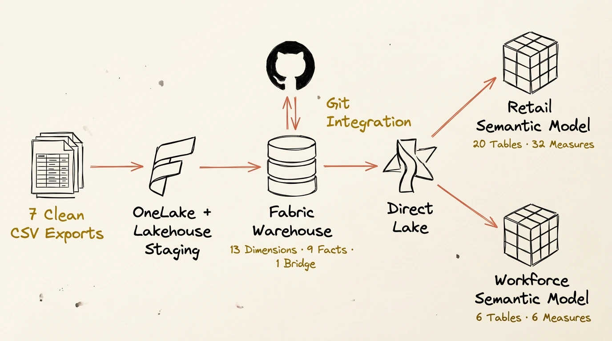
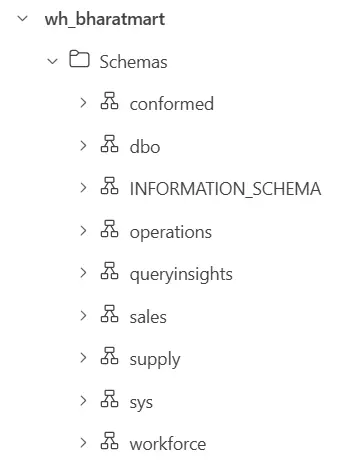
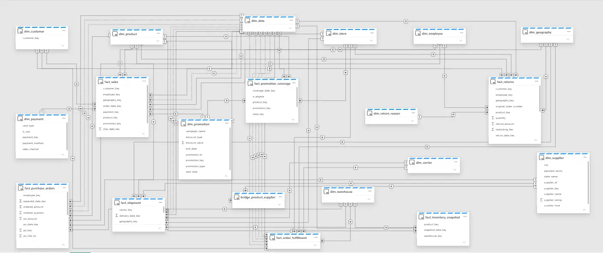
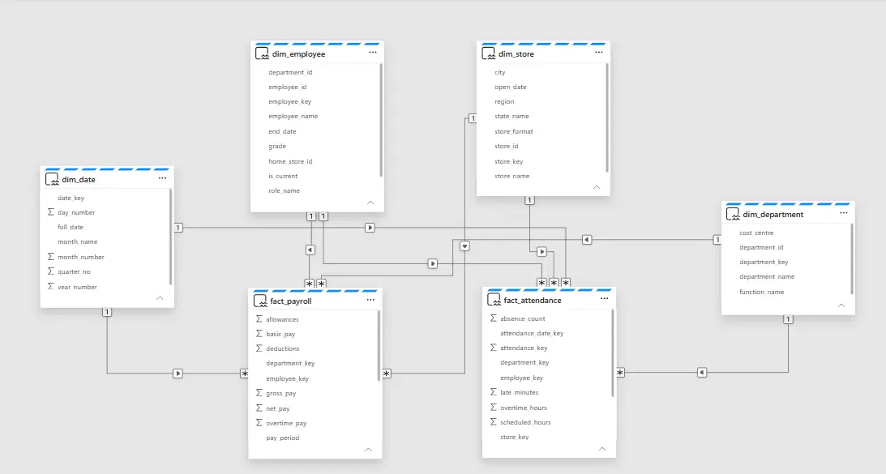

MICROSOFT FABRIC · DIMENSIONAL MODELLING · DIRECT LAKE
BharatMart enterprise retail data model.
A multi-process dimensional model that keeps nine retail, supply-chain and workforce Facts at their declared grains while sharing governed conformed Dimensions.
MODEL DELIVERY
01DEFINEBus matrix · Grain
→02STAGEOneLake · Lakehouse
→03MODELWarehouse · Dimensions
→04SERVETwo Direct Lake models

BharatMart architecture image
Nine processes, one governed enterprise model.
BharatMart is a development-scale Microsoft Fabric data-modelling project for a fictional Indian retailer. Seven clean domain exports represent Sales, Returns, Promotions, Procurement, Shipments, Inventory, Order Fulfilment, Payroll and Attendance.
The objective was not to force every process into one flat table. Each Fact keeps its own business grain, while valid shared Dimensions provide consistent filtering across the model.
Scope: dimensional modelling, semantic relationships, Date roles, focused DAX measures and Git integration. The project does not claim a dashboard, dbt pipeline or generic data-cleansing framework.
The model starts with business meaning, not matching column names.
I created a 9 × 13 bus matrix before building relationships. Rows represent business processes and columns represent conformed Dimensions. A relationship exists only when that Dimension is valid at the Fact's declared grain.
Sales
One row per customer order line with quantity, revenue, cost, tax and margin.
Returns
One row per return line with quantity, refund and restocking fee.
Inventory
One row per Date, Product and Warehouse combination.
Fulfilment
One row per order with milestone Dates, cancellation and cycle time.
Procurement
One row per purchase-order line with ordered and received quantities.
Workforce
Payroll and Attendance remain separate at their own grains.
Conformed Dimensions around nine narrow Facts.
The Warehouse contains 13 Dimensions, nine Facts and one Product–Supplier Bridge across conformed, sales, operations, supply and workforce schemas.
Customer, Product and Employee include historical version columns. The Product–Supplier Bridge represents valid sourcing associations and allocation percentages without introducing a Fact-to-Fact relationship.

Add the Fabric Warehouse screenshot as
images/bharatmart/fabric-warehouse.webpA controlled multi-Fact model for related operational processes.
The Retail Direct Lake model exposes seven Facts with valid shared Dimensions. It contains 20 tables, 32 focused measures and 52 relationships.
Each Fact has one active primary Date relationship. Ten secondary Date roles remain inactive and are activated only inside measures when needed. This supports Ship Date, Expected Date, Received Date, Promised Date, Delivery Date and fulfilment milestone analysis without creating ambiguous filter paths.

Add the Retail model screenshot as
images/bharatmart/retail-semantic-model.webpA separate semantic boundary over the same Warehouse.
Payroll and Attendance remain physically available in the enterprise Warehouse but are exposed through a separate Workforce Direct Lake model for a different audience and security boundary.
Date, Employee, Department and Store each filter both Facts from the one side. The final model has eight active, single-direction relationships and no indirect Fact-to-Fact filtering.

Add the Workforce model screenshot as
images/bharatmart/workforce-semantic-model.webpRelationship correctness matters more than a tidy-looking diagram.
I checked Fact grains, Dimension-key uniqueness, Date coverage, relationship cardinality, filter direction and active status. The final models use one-to-many, single-direction Dimension-to-Fact filtering and contain no Fact-to-Fact relationships.
A Workforce ambiguity was resolved by correcting the Payroll Date orientation and recreating the relationship from Date on the one side to Payroll on the many side. This removed the indirect Payroll–Date–Attendance filter route and allowed all eight intended Workforce relationships to remain active.
- Retail: 42 active relationships and 10 inactive secondary Date roles.
- Workforce: eight active relationships and zero inactive relationships.
- Compact KPI layer: 32 Retail measures and six Workforce measures.
- Fabric-generated Warehouse and TMDL definitions are version controlled through GitHub.
A portfolio project focused on modelling decisions.
- A 9 × 13 business-process bus matrix
- Nine Facts with explicitly declared grains
- Thirteen conformed Dimensions and one Product–Supplier Bridge
- Separate Retail and Workforce Direct Lake semantic models
- Controlled primary and secondary Date roles
- Thirty-eight focused DAX measures
- Git-versioned Fabric Warehouse and semantic-model artifacts